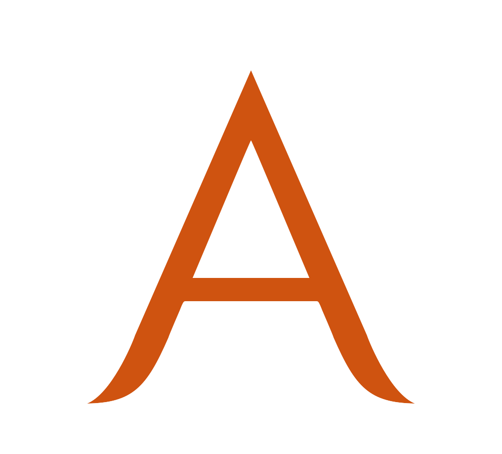

Assist others, empower yourself
June 2013 - August 2013
Assistance is a website to connect those who need services to those who provide it. A few friends and I co-founded it in early February. I took the role of Chief Operating Officer and helped with the non-technical aspects. I created the website logo and provided some of the intial designs as shown below. We used a mixture between Gimp and Photoshop for our initial work. We also setup production tools such as Redmine to speed up production.
Works

Assistance Logo
Assistance Logo

Editing the Title

Editing the Description

Editing the Categories